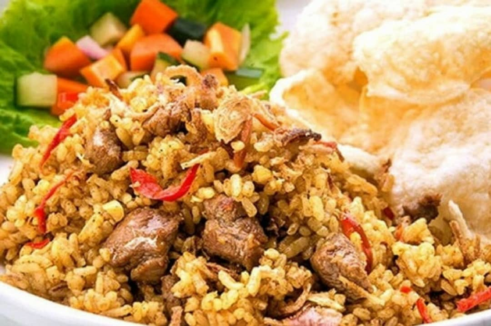
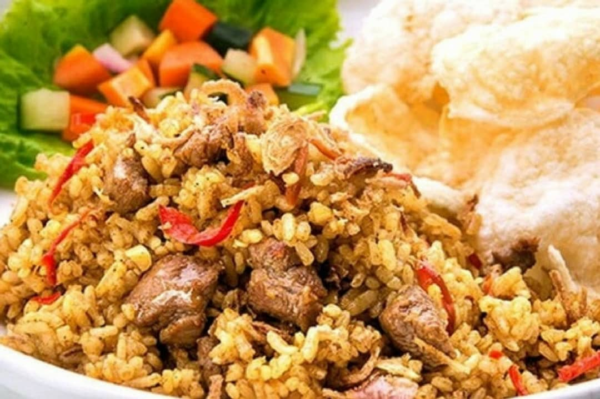

Makanan
Liat Makanan yang lainNasi Goreng Biasa |
|  Nasi Goreng Gila |
Mie Goreng Biasa |
Minuman
Liat Minuman yang lain Es Teh Manis |
Es Jeruk |
NasGor 407 adalah kedai yang menjual makanan terutama nasi goreng, kenapa namanya ada 407 karena pemilik kedai ini adalah orang Tegal dan daerah tegal ini identik dengan asama 407 dan Ada banyak berbagai macam nasi goreng yang kami sediakan disini. Tidak hanya nasi goreng yang kami jual, tetapi berbagai macam menu lainnya. Silahkan dilihat untuk menu-menunya.
Nasi Goreng Biasa |
|  Nasi Goreng Gila |
Mie Goreng Biasa |
Es Teh Manis |
Es Jeruk |
| No | Jenis Paket | Harga | Waktu Promo | Syarat dan Ketentuan | Deskripsi |
|---|---|---|---|---|---|
| 1 | Paket Wareg | 40.000 | Selama Bulan November | Makan Langsung ditempat | Nasi Goreng gila jumbo dan Es teh manis |
| 2 | Paket Mantap | 35.000 | Selama Bulan November | Makan di tempat/bawa pulang | Mie goreng jumbo dan Es Jeruk |
| 3 | Paket Asik | 30.000 | Selama Bulan November | Makan di tempat/bawa pulang | Nasi goreng biasa plus telor dadar/ceplok dan es jeruk/td> |
| 4 | Paket Hemat | 25.000 | Selama Bulan November | Makan di tempat/bawa pulang | Nasi goreng plus telor/ceplok dan es teh manis |
| 5 | Paket Ngapak | 58.000 | Selama Bulan November | Bawa Kartu Identitas Anda | Nagi goreng gila dan es teh manis |
Kedai pusat NasGor 407 terletak di daerah Mekarsari, Cimanggis Depok Jawa Barat.
Kontak Person: by DM @seljuny23